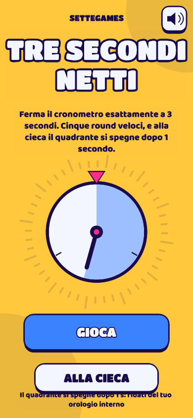

Tre Secondi Netti
Ferma il cronometro esattamente a 3 secondi. Cinque round veloci, e alla cieca il quadrante si spegne dopo 1 secondo.
Gratis, senza registrazione, direttamente nel browser. Anche su Telegram: @SetteGamesBot.
Classifica della settimana
| Gioca per entrare in classifica. |
Giochi simili
Sette SecondiFerma il cronometro esattamente a 7 secondi. Tre round, e a metà strada il quadrante si spegne.Perfect TimerFerma il cronometro esattamente a 10 secondi. Sembra facile, finché il tempo non sparisce.
Dagli stessi creatori
SettebelloScopa e scopone online, dagli stessi creatori
Last Sheep RoyaleLa pecora che sopravvive a tutti
Domande
Come si gioca?
Tocca per far partire il cronometro e toccalo di nuovo quando la lancetta torna in cima. Più sei vicino al tempo esatto, più punti fai. In modalità Alla cieca il quadrante si spegne dopo pochi secondi: devi contare a mente.
Devo registrarmi?
No. In classifica compari con un nome anonimo (un animale e un numero). Non raccogliamo dati personali.
È gratis?
Sì, si gioca gratis.